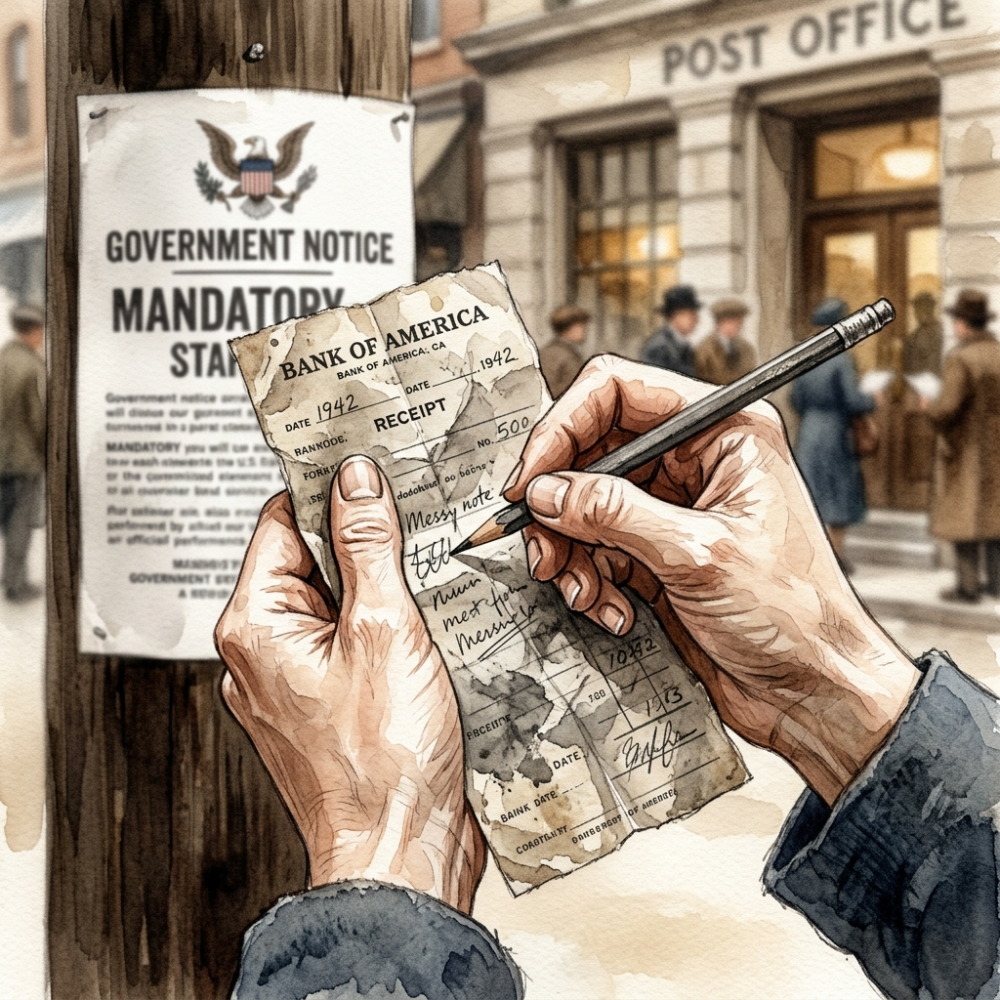
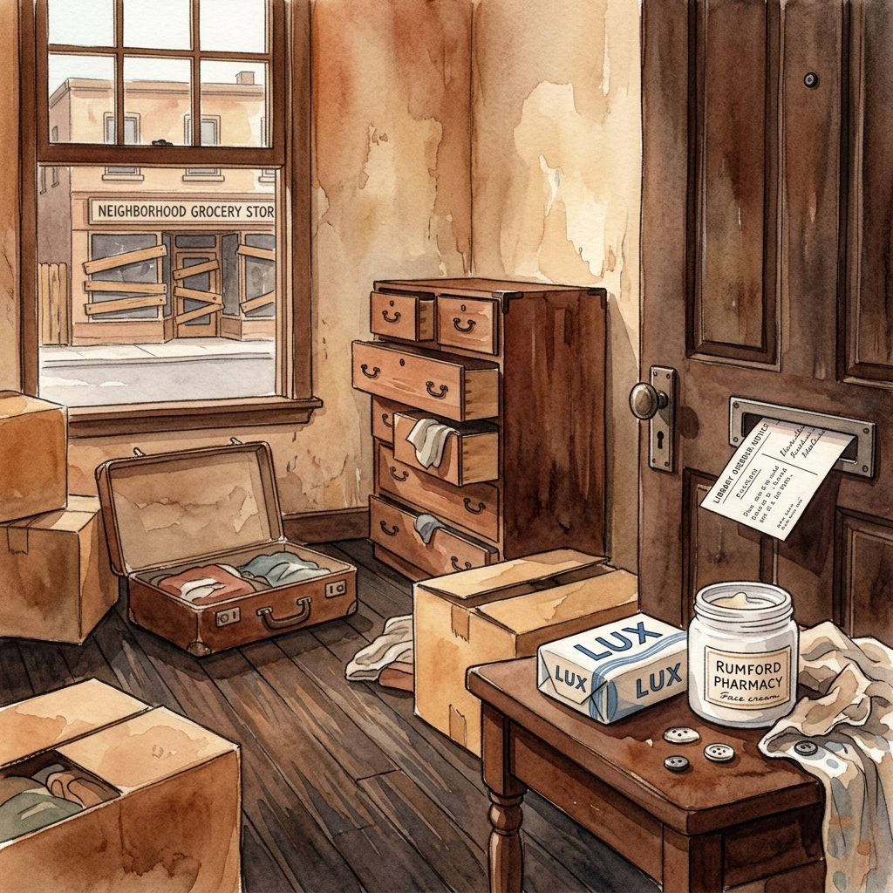
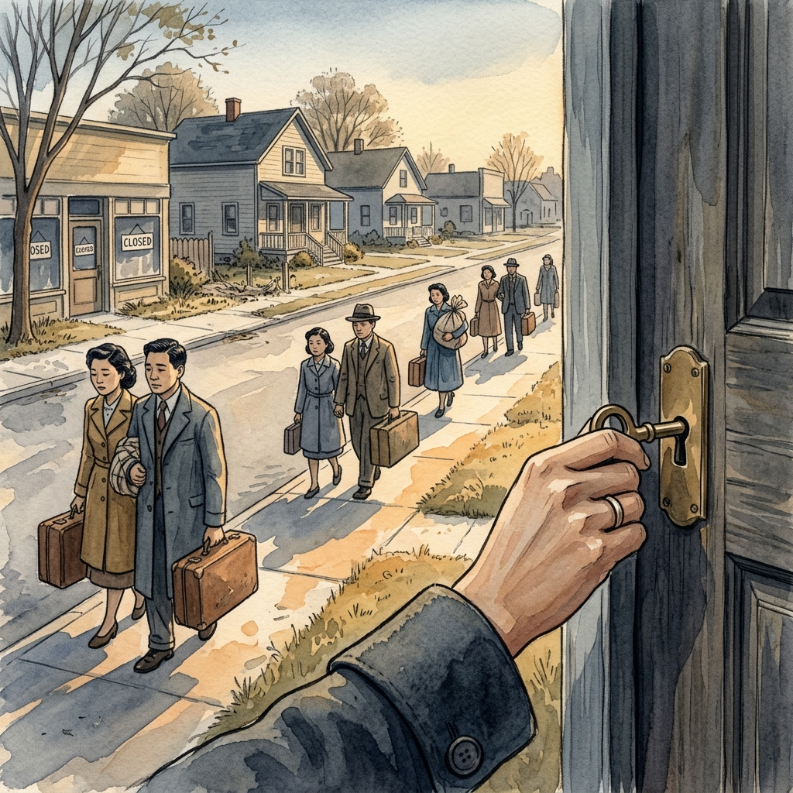

How do you pack a life in just 72 hours? In Berkeley, 1942, a Japanese-American woman stood frozen at the post office, staring at Civilian Exclusion Order No. 19. The notice, slapped on telephone poles and bus benches overnight, demanded her family evacuate their home. The government gave no choice—leave everything behind or face consequences. Her hands trembled as she scribbled notes on a crumpled bank receipt, her mind racing with what to carry.

Back home, boxes and suitcases littered the floor. She moved like a ghost through her neighborhood, passing a grocery store with boards nailed over its windows. At Rumford Pharmacy, she bought Lux soap and face cream—small comforts for an unknown future. Every errand felt heavier, each step a countdown. Nine days after the order, an overdue library notice slipped through her mail slot, a cruel reminder of normal life slipping away.

The regime in power had decided her family didn't belong. They weren't alone; thousands of Japanese-Americans faced the same orders across the West Coast. She folded clothes, sorted papers, and packed what little she could. A suitcase snapped shut. A door locked for the last time. The street outside was quiet, too quiet, as families prepared to leave behind homes, shops, and memories. The government's deadline loomed, and there was no turning back.